BẢN DUYỆT RIÊNG. Chưa thay thế GitHub Pages. Giữ artwork/bản đồ gốc; hoạt động diễn ra tại luống, đồ vật và NPC thật.
WASD/joystick, Shift/Run. E/chạm NPC. Cheolsu cho hạt; đến mép luống:1chọn hạt,2bình tưới,3thu hoạch; E/chạm thực hiện. Túi đồ và nhật ký không có hành động hoàn thành từ xa. Shop tại Minseo; giao bưu kiện cho Jiho; gom3giỏ quýt ở Jeju rồi trở lại Harin.
JPEG xem nhẹ, PNG gốc1:1. Video ghi Phaser thật, H264 nén không đổi kích thước, không có âm thanh; không dùng video để đánh giá từng pixel. Android/iPhone thật NOT TESTED, tiếng Hàn PENDING HUMAN REVIEW. Kiểm tra kỹ năng chơi/mỹ thuật vẫn cần chủ dự án duyệt.
mobile-touch
complete-physical-loop
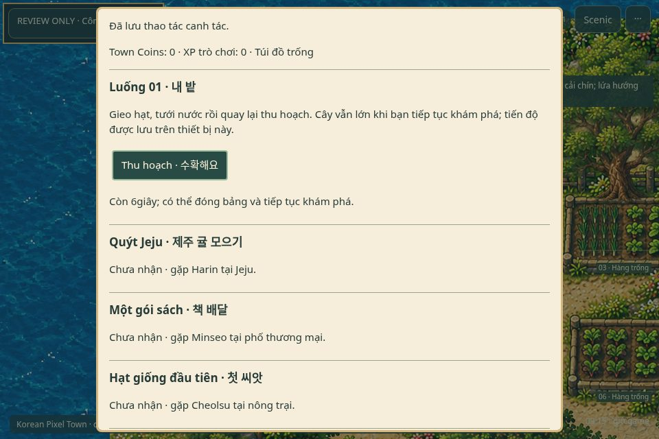
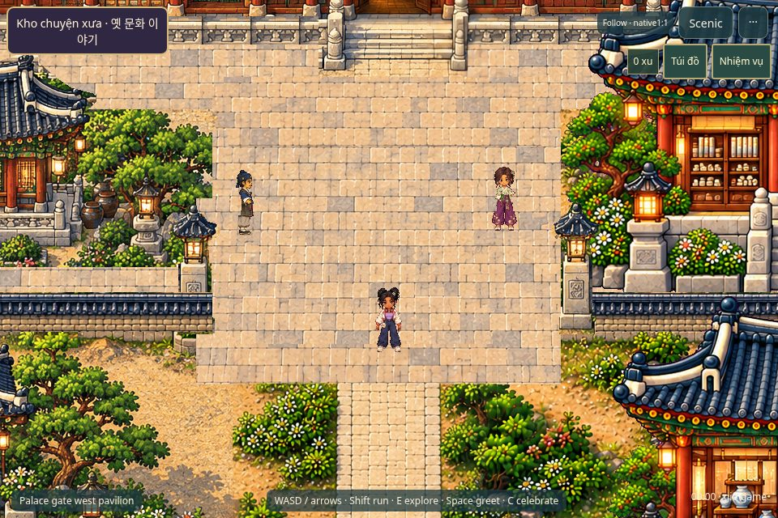
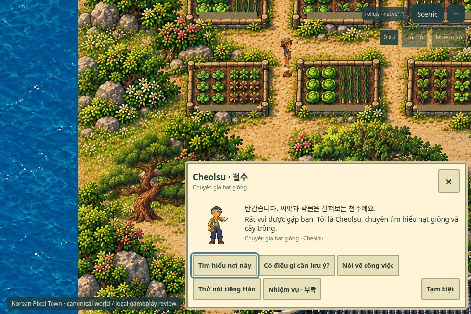
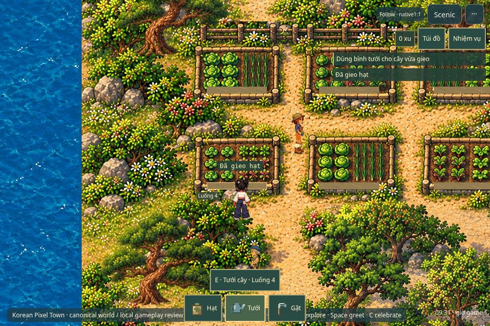
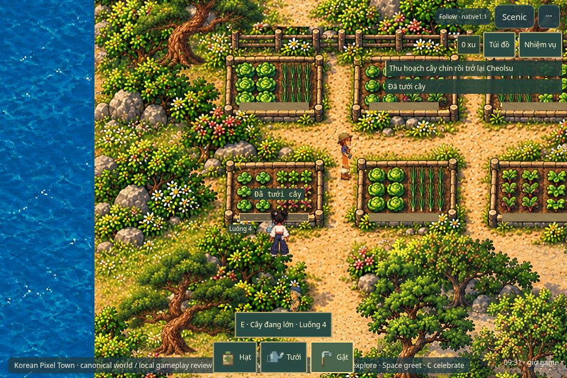
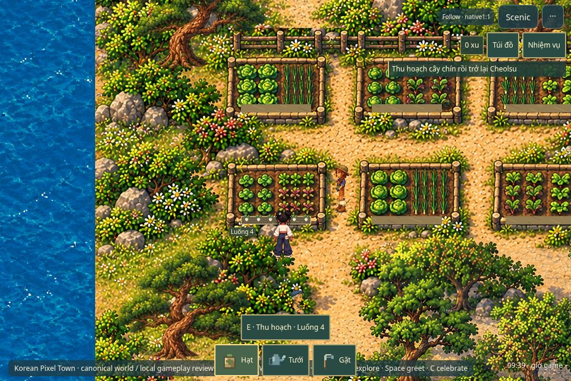
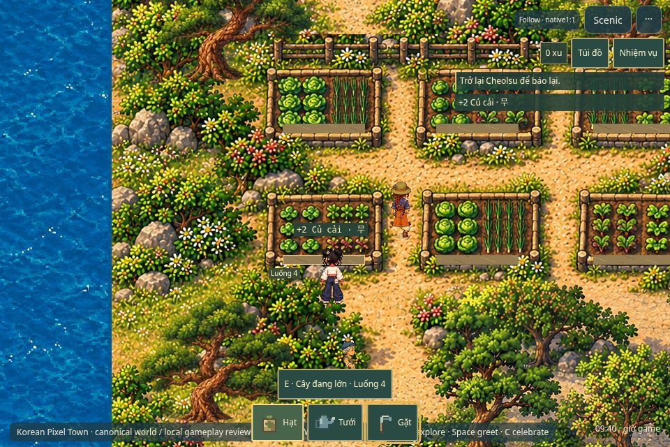
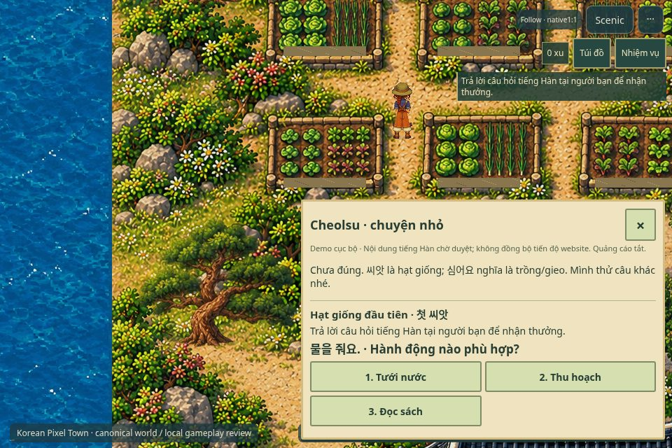
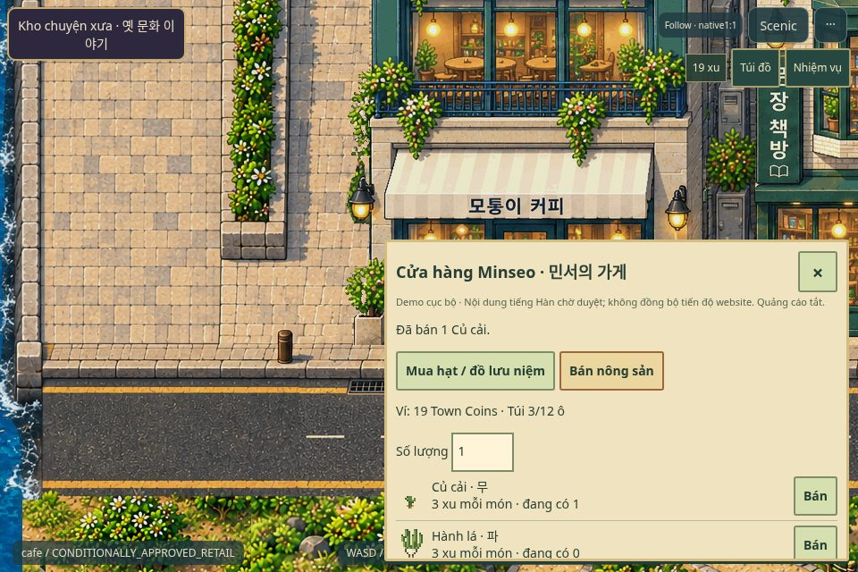
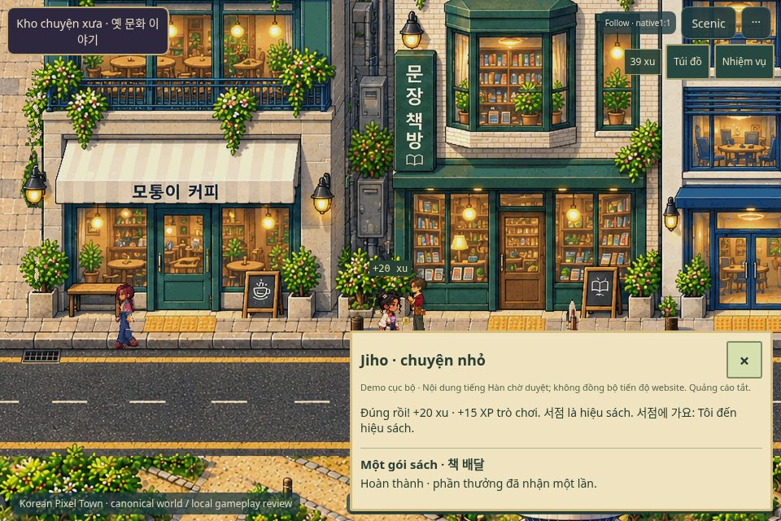
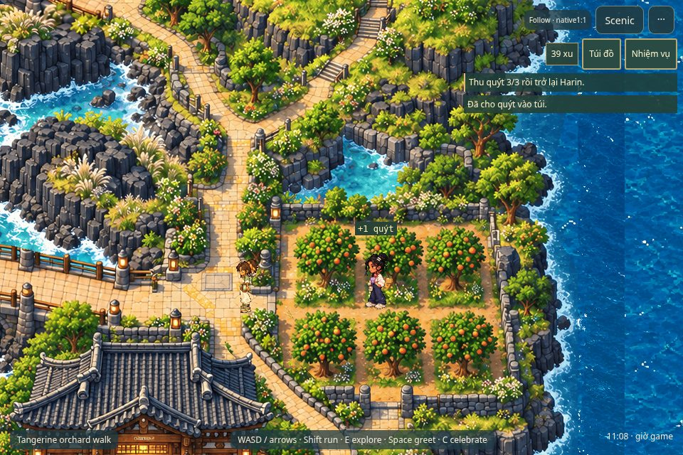
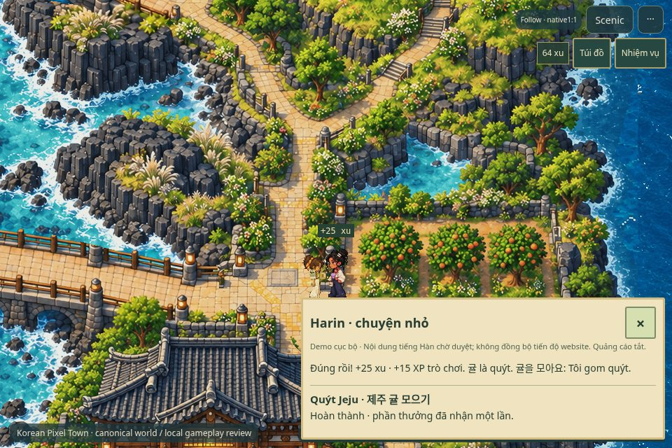
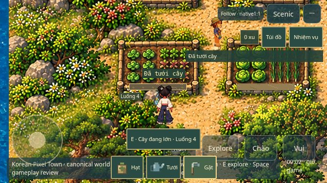
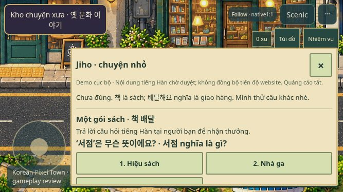
STOP: cần duyệt đúng artifact/manifest mới trước khi công khai. Không Phase3BE, main merge hoặc tự deploy.